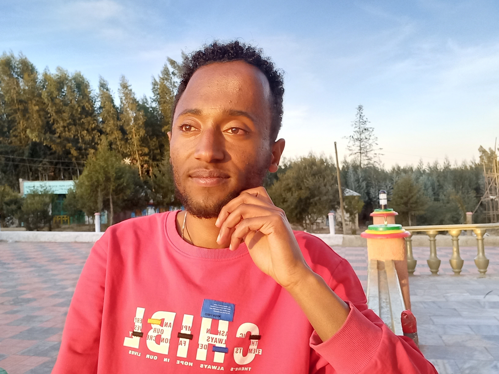

About Me
Hello Their!
My name is Kinetebeb Tesfaye ID:UGE/18715/12. I am a 3rd year computer science student at Maddawalabu University and I love computer science.
I chose computer science because I had a strong interest in technology and technological issues from an early age. My dad saw my love for technology and bought me a computer when I was in 6th grade.
Gradually, my love for computers grew. As a result, I began to study this subject to further my interest in science.
Now that I am well on my way to school, I plan to develop my own software that will benefit the community and Ethiopia as soon as I graduate.
I also plan to pursue a master's degree in software engineering.
Readers! That should be sufficient enough for me to say so myself today. Thank you for taking the time to read my article.